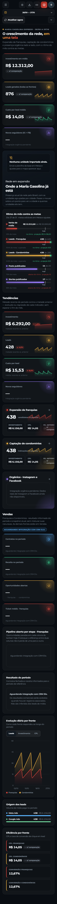
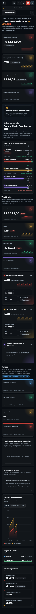
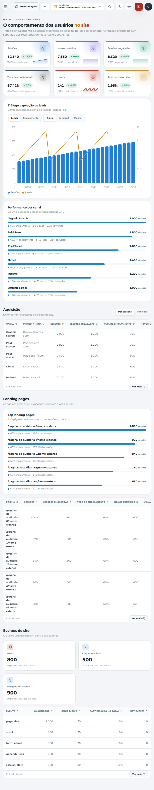
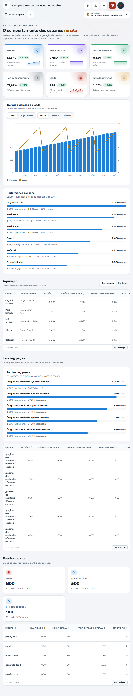
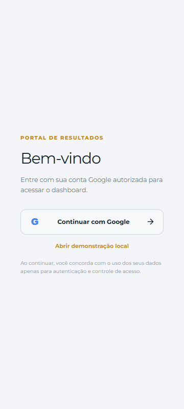
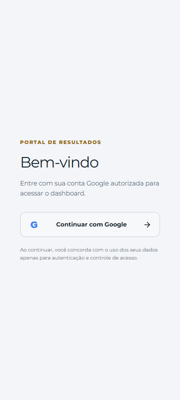

Comparação visual local com dados controlados. Clique em cada imagem para ler o PNG integral. Os tamanhos indicam a largura do viewport; o documento completo é mais alto.
Antes: Executiva na base do PR #13; Site e login no diagnóstico original. Essas telas já incorporam diferenças das entregas 01–03 no par posterior. O foco desta entrega é o espaço dos indicadores e o contraste.
O link de demonstração do login aparece apenas no servidor de desenvolvimento do diagnóstico. O build posterior o omite por uma condição já existente; a autenticação não foi alterada.
Estas capturas não demonstram dados nem uma sessão autenticada de produção. Evidências de publicação e testes estão no relatório da entrega.





